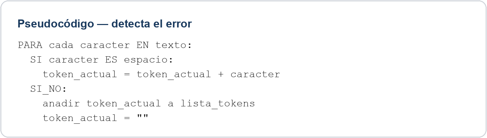

Tarea A · tokenizar(texto)
Qué se pedía. Una función tokenizar(texto) que devuelva una lista de tokens: palabras y signos de puntuación separados, y un caso especial bien tratado.
Solución de referencia
import re
def tokenizar(texto):
# Palabras (incluye tildes y ñ), números decimales como un solo token
# y signos de puntuación sueltos
patron = r"\d+\.\d+|[A-Za-zÁÉÍÓÚÑáéíóúñ]+|[.,;:!?]"
return re.findall(patron, texto)También es válida una implementación carácter a carácter con una bandera para detectar si el punto está entre dos dígitos (caso especial de número decimal) antes de tratarlo como separador.
Errores frecuentes
- Separar los números decimales por el punto (p. ej. «3.14» se convierte en «3», «.», «14» en vez de un solo token «3.14»).
- No tratar los signos de puntuación como tokens independientes (quedan pegados a la palabra anterior).
- No volcar el último token acumulado al final del bucle si el texto no termina en un separador.
- No contemplar mayúsculas ni tildes en la clase de caracteres de «letra».
Tarea B · extraer_fechas(texto)
Qué se pedía. Una función extraer_fechas(texto) que devuelva todas las fechas con formato dd/mm/aaaa, usando expresiones regulares.
Solución de referencia
import re
def extraer_fechas(texto):
patron = r"\b\d{2}/\d{2}/\d{4}\b"
return re.findall(patron, texto)Errores frecuentes
- Un patrón demasiado permisivo como
\d+/\d+/\d+, que también captura fracciones o números mal formateados (por ejemplo «5/6/78», con menos dígitos de los que pide el enunciado). - Olvidar los delimitadores de palabra (
\b), lo que puede capturar fragmentos de una cadena de dígitos más larga. - Usar
re.search(solo devuelve la primera coincidencia) en vez dere.findall(devuelve todas). - No probar el caso de una fecha al principio o al final de la frase.
Pseudocódigo con error

Pulsa sobre el texto para verlo más grande.
Dónde está el error. La lógica está invertida. Cuando el carácter es un espacio hay que cerrar el token actual (añadirlo a la lista y reiniciarlo); cuando no lo es, hay que seguir acumulando caracteres. Tal como está escrito, el código añade el espacio al token en vez de usarlo como separador, y vuelca el token a la lista cada vez que encuentra una letra normal, lo que trocea las palabras letra a letra en vez de por espacios.
Pseudocódigo corregido
PARA cada caracter EN texto:
SI caracter ES espacio:
SI token_actual NO ES vacío:
anadir token_actual a lista_tokens
token_actual = ""
SI_NO:
token_actual = token_actual + caracterCasos especiales y límites que se trabajaron: los números decimales («3.14» no debe partirse por el punto), las contracciones y las abreviaturas, que un separador simple rompería de forma incorrecta; y, en la extracción de fechas, que las expresiones regulares solo detectan los formatos que el patrón contempla (p. ej. «5 de marzo de 2024» no se detecta con un patrón dd/mm/aaaa).
Transferencia · contar palabras que empiezan por mayúscula
Enunciado. Escribe la lógica de una función que cuente cuántas palabras de un texto empiezan por mayúscula.
Solución de referencia
def contar_mayusculas(texto):
palabras = texto.split()
contador = 0
for palabra in palabras:
if palabra and palabra[0].isupper():
contador += 1
return contadorIdea clave que había que transferir de la tarea original: dividir el texto en unidades (palabras) recorriéndolo y aplicar una condición carácter a carácter o token a token; es el mismo patrón general que en tokenizar().